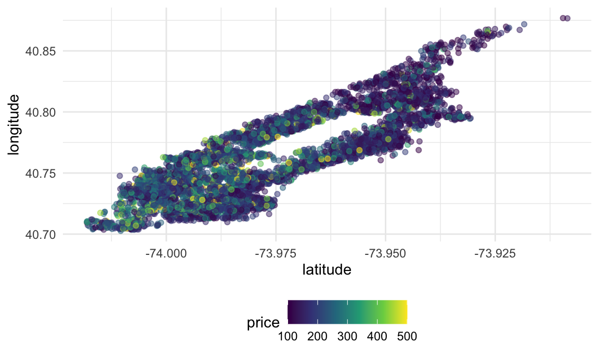
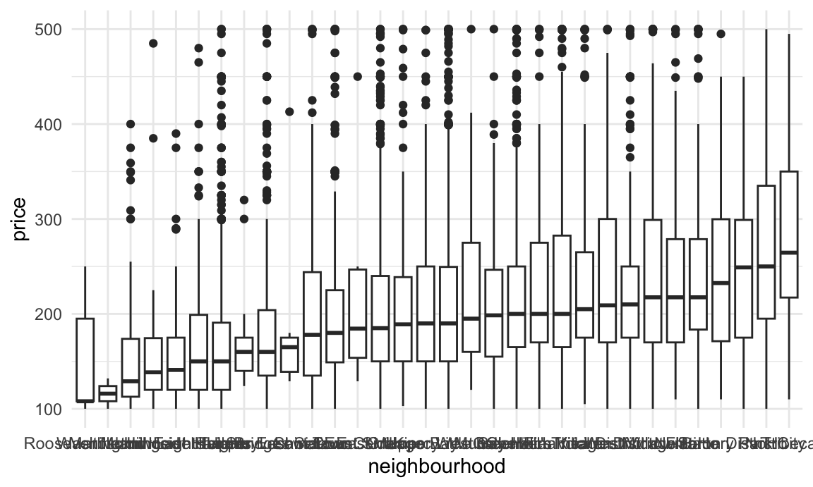
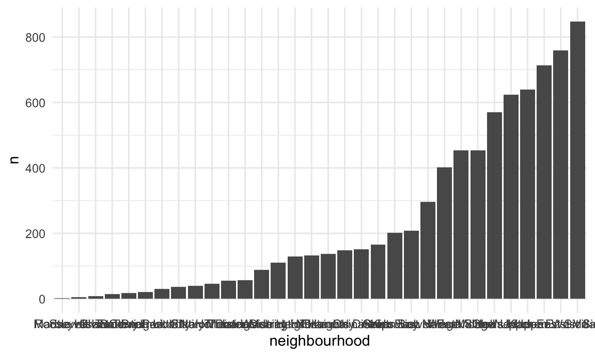

flexdashboardIn this page, we introduce flexdashboards as a way to
collect plots (either static or interactive).
flexdashboardClearly you can embed interactive graphics in HTML files produced by R Markdown; this is a handy time to introduce dashboards. In short, dashboards are a collection of related graphics (or tables, or other outputs) that are displayed in a structured way that’s easy to navigate.
You can create dashboards using the flexdashboard
package by specifying flex_dashboard as the output format
in your R Markdown YAML. There are a variety of layout options, but
we’ll focus on a pretty simple structure produced by the template below.
This is the default dashboard template in R Studio – if you have
flexdashboard installed, you can use
File > New File > R Markdown > From Template to
create a new .Rmd file with the structure below.
---
title: "Untitled"
output:
flexdashboard::flex_dashboard:
orientation: columns
vertical_layout: fill
---
```{r setup, include=FALSE}
library(flexdashboard)
```
Column {data-width=650}
-----------------------------------------------------------------------
### Chart A
```{r}
```
Column {data-width=350}
-----------------------------------------------------------------------
### Chart B
```{r}
```
### Chart C
```{r}
```This dashboard has space for three plots, which we’ll populate with plots of a few different types. Dashboard layouts are controlled by specifying columns and rows, and potentially subdiving these. We specified a two-column layout with set column widths, and then divided the second column into two panels. Using tabbed browsing and multiple pages can also be really useful – check out the gallery linked below for examples!
I’ll start by loading packages used in to create the dashboard.
library(tidyverse)
library(p8105.datasets)We’re going to focus on the Airbnb data for this page. The code below extracts what we need right now; specifically, we select only a few of the variables and filter to include a subset of the data. In part, this makes sure that the resulting dataset and plots are computationally feasible – for large datasets, you may need to downsample.
data(nyc_airbnb)
nyc_airbnb =
nyc_airbnb %>%
mutate(rating = review_scores_location / 2) %>%
rename(latitude = lat, longitude = long) %>%
select(
borough = neighbourhood_group, neighbourhood, rating, price, room_type,
latitude, longitude) %>%
filter(
!is.na(rating),
borough == "Manhattan",
room_type == "Entire home/apt",
price %in% 100:500)We’ll use this dataset as the basis for our plots.
The three code chunks below make plots exploring this dataset. Right now, we’re primarily interested in being able to create plots and embed them in a dashboard, so the plots themselves are relatively simple.
Below we’re plotting the location (latitude and longitude) of the
rentals in our dataset, and mapping price to color.
nyc_airbnb %>%
ggplot(aes(x = latitude, y = longitude, color = price)) +
geom_point(alpha = .5)
Next we show a boxplot for the distribution of price in neighbourhoods.
nyc_airbnb %>%
mutate(neighbourhood = fct_reorder(neighbourhood, price)) %>%
ggplot(aes(x = neighbourhood, y = price)) +
geom_boxplot()
Lastly, we make a bar chart showing the number of rentals in each neighbourhood.
nyc_airbnb %>%
count(neighbourhood) %>%
mutate(neighbourhood = fct_reorder(neighbourhood, n)) %>%
ggplot(aes(x = neighbourhood, y = n)) +
geom_bar(stat = "identity")
Embedding these in the “open” spots in the flexdashboard will create a (static) way of visualizing these data.
flexdashboards on websitesYou can share the HTML files for dashboards directly (e.g. by email); you can also host these online to make the dashboard visible to others. That process is essentially the same as for any other website you’d make.
However, the website’s _site.yml file conflicts with the
dashboard’s YAML header regarding the output format – and
the website’s _site.yml “wins”. To address this issue,
instead of knitting you can use this command to knit the dashboard.
rmarkdown::render("dashboard_template.Rmd", output_format = "flexdashboard::flex_dashboard")This will create dashboard_template.html but not open it
in RStudio’s Viewer pane; you can open the file in a browser instead.
Alternatively, using RStudio’s Build pane to Build Website will produce
the same results. To illustrate, we’ll put the dashboard we just created
on a website for this topic.
All of this YAML business is only an issue for
dashboards embedded in websites; a standalone dashboard (in a
non-website GH repo or R Project) can be knit using the same process as
other .Rmd files.